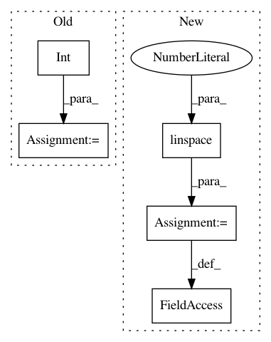

1e96334c79060b60c51c7d3b85bea7048d8e1ad2,test/kernels/test_grid_kernel.py,,,#,8
Before Change
grid_size = grid.size(-2)
grid_dim = grid.size(-1)
grid_data = torch.zeros(int(pow(grid_size, grid_dim)), grid_dim)
prev_points = None
for i in range(grid_dim):
for j in range(grid_size):
grid_data[j * grid_size ** i : (j + 1) * grid_size ** i, i].fill_(grid[j, i])
After Change
from gpytorch.utils.grid import create_data_from_grid
grid = [torch.linspace(0, 1, 5), torch.linspace(0, 2, 3)]
d = len(grid)
grid_data = create_data_from_grid(grid)
In pattern: SUPERPATTERN
Frequency: 3
Non-data size: 5
Instances
Project Name: cornellius-gp/gpytorch
Commit Name: 1e96334c79060b60c51c7d3b85bea7048d8e1ad2
Time: 2019-09-29
Author: kaw293@cornell.edu
File Name: test/kernels/test_grid_kernel.py
Class Name:
Method Name:
Project Name: danforthcenter/plantcv
Commit Name: 96c26bd09d02bb9cddbc083c75ba2ea65b5d377a
Time: 2020-07-16
Author: noahfahlgren@gmail.com
File Name: plantcv/plantcv/color_palette.py
Class Name:
Method Name: color_palette
Project Name: automl/SMAC3
Commit Name: 32ae80fe65595a38fd378bd3b2abaa3a8beeae01
Time: 2019-12-02
Author: ashraaghav@gmail.com
File Name: smac/intensification/successive_halving.py
Class Name: SuccessiveHalving
Method Name: _init_sh_params